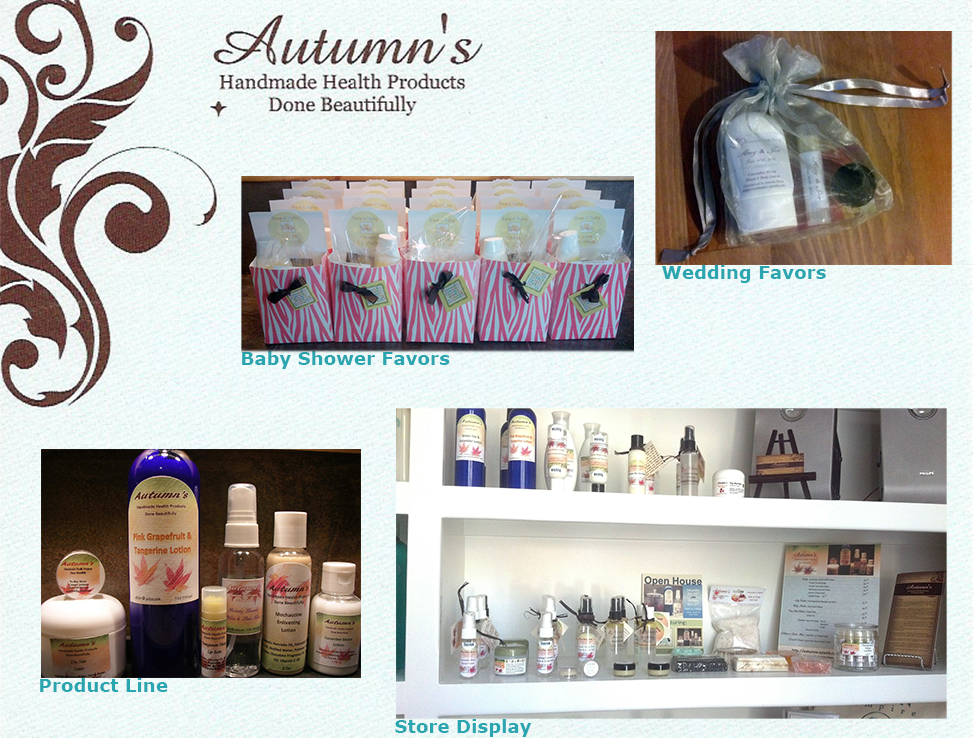

Brand Design
Autumn's Hand Crafted
Autumn's Hand Crafted is a premium skin care product line created in 2012. In addition to creating the line's skin care products, I also carefully selected the packaging and designed the brand identity, including typefaces, images, and color scheme. No longer in operation, I am showcasing Autumn's Hand Crafted as an example of brand creation, from top to bottom.
Crafting the Products
Each item was crafted with care and precision, using only the highest quality, all-natual ingredients. In addition to an assortment of soaps, other offerings included hand crafted lotions and lip balms, shown below.

Designing the Brand
To exemplify the high quality and natural ingredients that went into the products themselves, I chose a color palette, typefaces, and images that encapsulated that message in a way that was clear, yet understated. The idea here was to create a recognizable brand image. One that would allow the products themselves to be highly visible and showcase their unique qualities yet would be recognizable by return customers.
Return to Home Page
AutumnAll Year.com